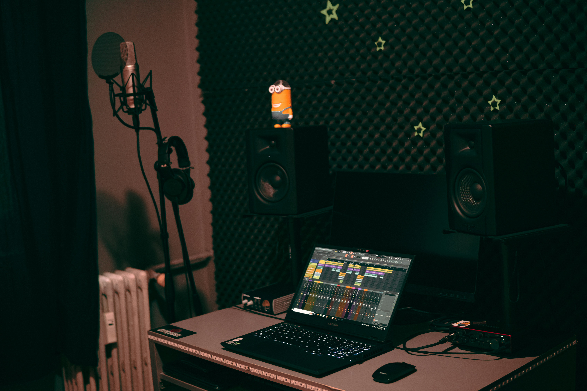

When diving into music production, high-end gear may seem essential, but skill always outweighs specs.
Famous indie artist Steve Lacy crafted hit songs on an iPhone 4,
proving that creativity matters more than equipment.
While high-spec gear offers advantages,
it can also bring financial burdens and even stifle creativity.
Budget-friendly tools and strategic upgrades can be just as effective.
The key is to focus on skill, creativity, and making the most of the tools you already have.
Many aspiring music producers believe that expensive equipment is essential for creating high-quality music.
The rise of social media has amplified this perception, with producers often showcasing their high-end gear to project a professional image.
However, this isn’t always the case.

Resourceful Alternatives for Musicians:
Aspiring producers have many creative avenues available today.
High quality samples and plugins are readily accessible online.
Free and open-source Digital Audio Workstations (DAWs) such as Bandlab and Garageband offer surprising power and capabilities for producing professional-sounding music.
Sample packs and free virtual instruments, like those offered by Cymatics (which frequently sends free downloads to subscribers),
provide ample sonic experimentation opportunities.
Learning an instrument and incorporating live recordings adds a distinctive personal touch.
Techniques like freezing tracks to manage RAM are essential for efficient post-production workflows.
Artists like Skrillex and Crankdat often consolidate their tracks and utilize phones for recording vocals and manipulating samples,
sometimes using creative routing techniques such as routing samples to vocoders on a separate bus and using gain automation to control dynamics for complex rhythms.
In the end, it’s not the price tag of your equipment that defines your music, but the originality and emotion in your sound. Even with limited tools, if your ideas are strong and your execution is creative, your music can still resonate and stand out.